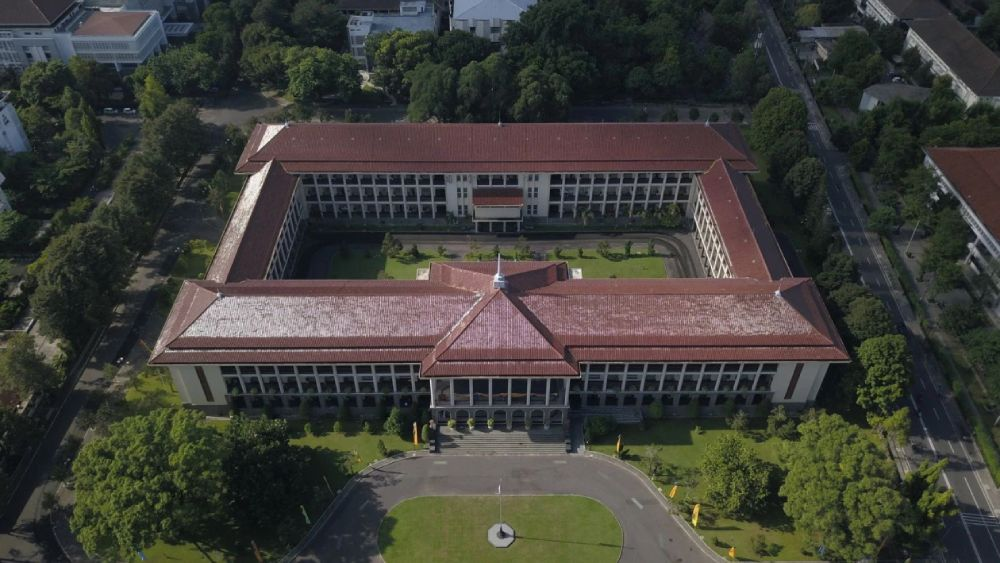
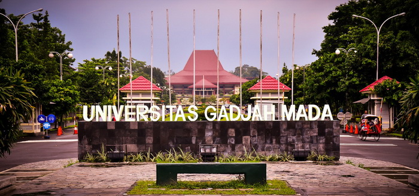

Universitas Gadjah Mada
Universitas Gadjah Mada (UGM) merupakan salah satu perguruan tinggi negeri tertua dan terkemuka di Indonesia. Berdiri pada tanggal 19 Desember 1949, UGM menjadi simbol kebangkitan pendidikan nasional pascakemerdekaan Indonesia. Berlokasi di Yogyakarta, UGM memiliki kampus yang sangat luas, membentang di area sekitar 360 hektar, dengan lanskap hijau yang tertata rapi dan suasana akademik yang dinamis. Sejak awal pendiriannya, UGM telah mengemban misi untuk menjadi garda terdepan dalam membangun bangsa melalui pendidikan, penelitian, dan pengabdian kepada masyarakat. Dengan semboyan "Mengakar Kuat, Menjulang Tinggi", UGM berkomitmen untuk membentuk generasi yang berilmu, berbudi luhur, serta mampu bersaing di tingkat global.
Sebagai universitas nasional, UGM menaungi lebih dari 18 fakultas, satu sekolah vokasi, dan satu sekolah pascasarjana, yang menawarkan ratusan program studi dari berbagai disiplin ilmu. Bidang ilmu yang dikembangkan mencakup kedokteran, hukum, ekonomi, teknik, pertanian, filsafat, budaya, hingga sains terapan dan teknologi informasi. Universitas ini juga memiliki rumah sakit pendidikan sendiri, RSUP Dr. Sardjito, yang mendukung pendidikan kedokteran dan pelayanan kesehatan masyarakat. UGM dikenal aktif dalam riset-riset multidisipliner yang berskala nasional maupun internasional, serta berperan penting dalam pengembangan inovasi teknologi, ketahanan pangan, energi terbarukan, dan pemberdayaan masyarakat desa.
Di tingkat global, UGM terus memperluas jaringannya dengan berbagai universitas dan lembaga internasional. Program pertukaran pelajar, double degree, joint research, dan kolaborasi akademik internasional diadakan secara rutin untuk mendorong mobilitas global mahasiswa dan dosennya. UGM juga menjadi anggota dari berbagai konsorsium pendidikan tinggi dunia, memperkuat eksistensinya sebagai universitas berkelas dunia. Dengan fasilitas modern seperti perpustakaan pusat yang megah, laboratorium riset canggih, pusat inovasi, serta ekosistem startup dan inkubator bisnis, UGM menjadi tempat ideal untuk lahirnya para inovator, pemimpin, dan agen perubahan.
Tidak hanya unggul dalam bidang akademik, kehidupan kampus di UGM juga sarat dengan kegiatan kemahasiswaan, budaya, dan sosial. Ribuan mahasiswa dari seluruh Indonesia dan mancanegara hidup bersama dalam suasana yang toleran dan inklusif. Organisasi kemahasiswaan, unit kegiatan mahasiswa (UKM), komunitas sosial, hingga kegiatan olahraga dan seni menjadi bagian tak terpisahkan dari kehidupan sehari-hari di UGM. Dengan kombinasi pendidikan berkualitas, peluang riset, kehidupan kampus yang dinamis, serta semangat pengabdian kepada masyarakat, Universitas Gadjah Mada terus mencetak lulusan-lulusan yang siap menghadapi tantangan dunia modern dan berkontribusi nyata untuk kemajuan bangsa Indonesia.